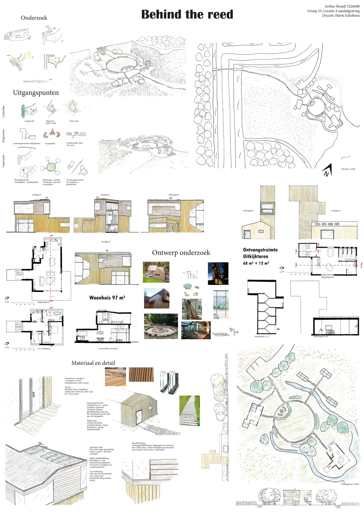

Behind the Reed was my very first design project at TU Delft, made for BK1ON1, the opening design module of the bachelor. The assignment was to design a service residence for a forest ranger within a given South Holland landscape, reviving the old typology of a caretaker’s house tied to the land it oversees. The ranger’s job stretches beyond just the forest: they watch over the nature area, host and inform visitors such as school classes or birdwatchers, monitor flora and fauna, and track the effects of climate change in the field. The house therefore had to combine living and working, private life and visual observation of the landscape, without losing the intimacy of a home for a small family.
My site was a former sand excavation area, and my response was to split the private residence from the more public reception space and lookout tower, connected by a path that winds through the reed. The house itself stays compact, oriented toward both the view and the sunlight through the day, with the garden treated as a true extension of the living spaces rather than an afterthought. The reception space and lookout tower give visitors and the ranger a place to take in the view and get informed, without ever having to walk past the bedroom to get there.
The design uses wooden façade cladding, light-coloured and vertical at ground level, darker and horizontal above, that continues onto the roof, combined with EPDM roofing and an aluminium sliding door hidden in the floor to blur the line between inside and outside. A hardwood terrace close to the water ties the house back into its landscape.
Tools/Approach:
Hand drawing, Site visit
Poster
